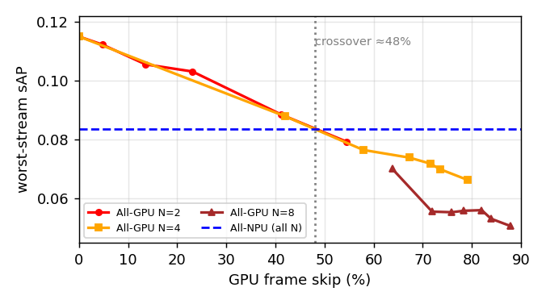

Quantization, Latency, and Device Placement Reversal in Multi-Camera Streaming Detection
Figure & Table Reproduction Guide
Platform: RTX 5090 GPU + Mobilint MLA100 NPU · YOLOv11s · Argoverse-HD (24 logs) ·
NPU binary mxq b2441f9d, infer_mode global8 · both devices torch.set_num_threads(4) (operating point).
All values extracted from existing accv_experiments/results/rev*.csv — no new measurement. core scripts & paper unchanged.
Reproduce everything
cd paper/results_data && python regen_all.py
# regenerates 6 artifacts, cross-checks each against paper/main_vision.tex, refreshes this page
Overview
Figure 1 — Qualitative quantization failures (fig:failures)
What it shows. Frames where the INT8 NPU drops small/distant safety-critical objects (red) that the FP32 GPU keeps (green); large objects unaffected.
Source data: fig1_failures/ | Generator: generate_fig1.py | Output: vis_failure_examples.pdf
python fig1_failures/generate_fig1.py # needs GPU+NPU device
Selected panels:
| panel | sid | frame | NPU-missed classes |
|---|
| 1 | 2 | 5 | person;person;traffic_light;traffic_light;traffic_light |
| 2 | 13 | 41 | traffic_light;traffic_light;traffic_light |
| 3 | 17 | 163 | person;person;person |
| 4 | 22 | 1 | person |
PDF: vis_failure_examples.pdf PASS
Figure 2 — Contention sweep (fig:sweep)
What it shows. All-GPU worst-stream sAP falls monotonically with GPU frame-skip while All-NPU is flat (0.084); the two cross at ≈48% GPU skip — moderate contention, not saturation. Stable across N=2,4,8.
Source data: sweep_byN_points.csv (21 pts, 3 reps, threads=4, NPU skip ≤0.1%) | Generator: generate_fig2.py | Output: fig2_sweep.tex, fig2_sweep.png
python fig2_sweep/generate_fig2.py

pgfplots coords: fig2_sweep.tex vs paper PASS
Table 1 — Single-camera per-size sAP (tab:single-stream)
What it shows. At the operating point (frame skip ≈0), pure INT8 quantization: small −48.4%, medium −19.7%, large +0.1% (n.s.). Infer GPU 8.5 / NPU 10.0 ms.
Source data: single_stream.csv (rev19 threads=4, 24 logs, 3 reps) | Generator: generate_table1.py | Output: table1.tex
python table1_single_stream/generate_table1.py
| Metric | GPU | NPU | NPU−GPU |
|---|
| AP small | 0.0159 | 0.0082 | -0.008 (-48.4%) |
| AP medium | 0.1839 | 0.1477 | -0.036 (-19.7%) |
| AP large | 0.4768 | 0.4773 | +0.001 (+0.1%) |
matches paper LaTeX PASS
Table 2 — Causal separation: quantization vs staleness (tab:decomp)
What it shows. A host post-processing thread setting toggles staleness while leaving detections bit-identical. Quantization is small-biased & load-stable; staleness is large-biased & load-driven (opposite directions).
Source data: decomp.csv (rev18) + bit-identical (rev22) | Generator: generate_table2.py | Output: table2.tex
python table2_decomp/generate_table2.py
| component | small | medium | large |
|---|
| quantization (off) | -48.4% | -19.7% | +0.1% |
| staleness (off→on ΔsAP) | ≈0 | -0.030 | -0.098 |
Bit-identical: 20 frames, all identical = True, max box/score diff = 0.0/0.0 PASS
Note: offline mAP is not thread-invariant (it penalizes skip as zero recall); separation rests on bit-identical detections + skip 0% vs 52% contrast.
Table 3 — Reversal under co-tenancy (tab:main)
What it shows. Worst/mean sAP at N=4 for All-GPU, All-NPU, Oracle under 3 co-tenants. Device choice reverses only under the GPU-saturating VLM (All-NPU 0.083 vs All-GPU 0.016, 5.2×).
Source data: main_worst_mean.csv (rev21/rev20, N=4, 3 reps) | Generator: generate_table3.py | Output: table3.tex
python table3_main/generate_table3.py
| co-tenant | AllGPU worst | AllGPU mean | AllNPU worst | AllNPU mean | Oracle worst | Oracle mean | GPU/NPU skip |
|---|
| L1_CNN | 0.092 | 0.131 | 0.083 | 0.126 | 0.109 | 0.133 | 35%/1% |
| L2_LM | 0.062 | 0.1 | 0.042 | 0.088 | 0.063 | 0.099 | 83%/76% |
| L3_VLM | 0.016 | 0.047 | 0.083 | 0.126 | 0.083 | 0.12 | 100%/1% |
matches paper LaTeX PASS
Table 4 — Per-size loss under real contention (tab:persize-contention)
What it shows. All-GPU per-size sAP loss Δ vs uncontended, N=4. In the partial band the loss is large-biased (Δlarge≫Δsmall), confirming the thread-lever decomposition under real contention. All-NPU is contention-invariant (≤0.001).
Source data: persize_under_contention.csv (rev25, 3 reps) | Generator: generate_table4.py | Output: table4.tex
python table4_persize/generate_table4.py
| GPU frame skip | Δ small | Δ medium | Δ large |
|---|
| ≈31% | +0.001 | +0.024 | +0.059 |
| ≈59% | +0.001 | +0.040 | +0.095 |
| 100% (saturated) | +0.006 | +0.115 | +0.326 |
matches paper LaTeX PASS
Provenance
Sources: Table 1 ← rev19_table1_threads4; Table 2 ← rev18_postproc_levers + rev22_bitident;
Table 3 ← rev21_mean_worst_extract + rev20_5strat_heavybg; Table 4 ← rev25_persize_under_contention;
Fig.2 ← rev24_sweep_byN_points; Fig.1 ← phase_vis_failure_examples.
No new measurement; core experiment scripts, results/rev*, and the paper body unchanged.